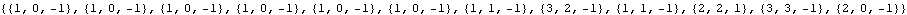

Simple binary Turing machines, their numbering, behaviour and output.
Wolfram’s numbering scheme of Turing machines with s states and k characters and no explicit halting state.
Number of Turing machines with s states and k characters (binary machines are enligthed) :
| s→2 | s→3 | s→4 | s→5 | |
| k→2 | 4096 | 2985984 | 4294967296 | 10240000000000 |
| k→3 | 2985984 | 198359290368 | 36520347436056576 | 14348907000000000000000 |
| k→4 | 4294967296 | 36520347436056576 | 1208925819614629174706176 | 109951162777600000000000000000000 |
| k→5 | 10240000000000 | 14348907000000000000000 | 109951162777600000000000000000000 | 2980232238769531250000000000000000000000000 |
Instructions table of a machine whose rule number is given :
Rule number of a machine whose instructions table is given :

Clearly TMNumber annihilates instructions :

The s×k triplets, (s,k,d), associated to a given rule, in Wolfram’s canonical order (s =1, 2, ...;k=0, 1, ...; d=-1,+1) :

The same triplets in shifted mode (s =0, 1, ...;k=0, 1, ...; d=0,1) :
Recovering the machine rule number from the shifted triplets :

Example : running binary 2-state machine 2867 on an initially white tape :

Running on an initially black tape reverses the black and white cells if the rule number is suitably changed (permute successive odd and even triplets and flip the character bit in each triplet) :
Out[20]=
Analysis of the 4096 2-states binary machines.
Some machines surely do not halt and may be discarded :
Example 1. Machines that do not halt because the head moves repeatedly to the left (in shifted mode : (σ,0)->(σ’,κ’,0)):


Example 2. Machines that do not halt because the initial instruction is applied repeatedly (in shifted mode : (0,0)->( 0,κ,0)) :


Subsets 1 & 2 are not disjoint :

One half (2048) of the machines halt in one step :
Example 3 : Machines that halt in one step outputing a single white cell.


Example 4 : Machines that halt in one step outputing a single black cell.


Machines belonging to the union of the previous subsets are rather trivial. The other machines belong to the “reduced” set :


Evolution of the 512 “not so” trivial machines on an initially white tape :
Observe that the busiest machines output 111 in 7 steps (Rule numbers, 423, 935, 1447, 1959, 2439, 2471, 2983, 3495, 3891, 4007) or 101 in 7 steps too (Rule number, 2867).
Output inventory of the halting 2-states binary machines.
Mathematica preliminaries :

One only runs the 512 machines from the reduced set and, after that, one reintroduces the discarded one-step halting machines :


| {0} | 1024 |
| {1} | 1024 |
| {0,0} | 106 |
| {1,1} | 108 |
| {0,1} | 42 |
| {1,0} | 32 |
| {1,1,1} | 10 |
| {1,0,1} | 1 |
The output has been read from left to rigth but it may equally well be read from rigth to left :

The tape may equally well be initially completely black :


From left to rigth : halting 2-states machines 1) on a white tape, output read from left to rigth 2) on a white tape, output read in both directions 3) and 4) on a white or black tape, output read in both directions (completely symmetrical under 0-1 and rigth-left inversions).
Analysis of the 2985984 3-states binary machines.
Some machines surely do not halt and may be discarded :
Example 1. Machines that do not halt because the head moves repeatedly to the left (in shifted mode : (σ,0)->(σ’,κ’,0)):


Example 2. Machines that do not halt because the initial instruction is applied repeatedly (in shifted mode : (0,0)->( 0,κ,0)) :

Example 3. Machines that do not halt because they execute repeatedly a specific pair of instructions (in shifted mode : (0,0)->( 1,κ,0) and (1,0)->( σ’,κ’,0) :

Example 4 : Machines that halt in one step outputing a single white cell.

Example 5 : Machines that halt in one step outputing a single black cell.

Machines belonging to the union of the previous subsets are rather trivial. The other machines belong to the “reduced” set :


The busiest 3-states machines halt in 25 steps :
Out[118]=

Two most productive machine are among the busiest.
Output inventory of the halting 3-states binary machines.
One only runs the 580608 machines from the reduced set and, after that, one reintroduces the discarded one-step halting machines :

| {0} | 746496 |
| {1} | 746496 |
| {0,0} | 95624 |
| {1,1} | 96132 |
| {0,0,0} | 11170 |
| {1,1,1} | 15574 |
| {0,0,1} | 2824 |
| {0,1} | 52192 |
| {1,1,0} | 2962 |
| {1,1,1,1} | 1192 |
| {1,0,1} | 2304 |
| {0,1,0} | 2188 |
| {1,0} | 45384 |
| {0,1,1} | 2142 |
| {1,0,0} | 1860 |
| {0,1,1,1} | 40 |
| {1,0,1,0} | 70 |
| {1,1,0,0} | 36 |
| {1,1,0,1} | 90 |
| {1,0,0,0} | 72 |
| {1,1,1,1,1} | 458 |
| {0,0,0,1} | 74 |
| {1,1,1,0} | 96 |
| {1,0,1,0,1} | 54 |
| {0,0,0,0} | 28 |
| {1,0,1,1} | 24 |
| {1,1,1,1,1,1} | 2 |
| {0,1,0,1} | 18 |
| {1,0,0,1} | 14 |
| {1,1,1,1,0} | 2 |
| {0,1,0,0} | 4 |
| {1,0,1,1,1,1} | 2 |
| {1,1,0,0,1} | 2 |
| {0,0,1,1} | 4 |
| {1,0,0,0,1} | 2 |
| {1,1,0,0,0} | 2 |
| {0,1,1,0} | 4 |
| {1,1,0,1,0,1} | 2 |
| {1,0,0,1,1} | 2 |
The output has been read from left to rigth but it may equally well be read from rigth to left :


The tape may equally well be initially completely black :


From left to rigth : halting 3-states machines 1) on a white tape, output read from left to rigth 2) on a white tape, output read in both directions 3) and 4) on a white or black tape, output read in both directions (completely symmetrical under 0-1 and rigth-left inversions).